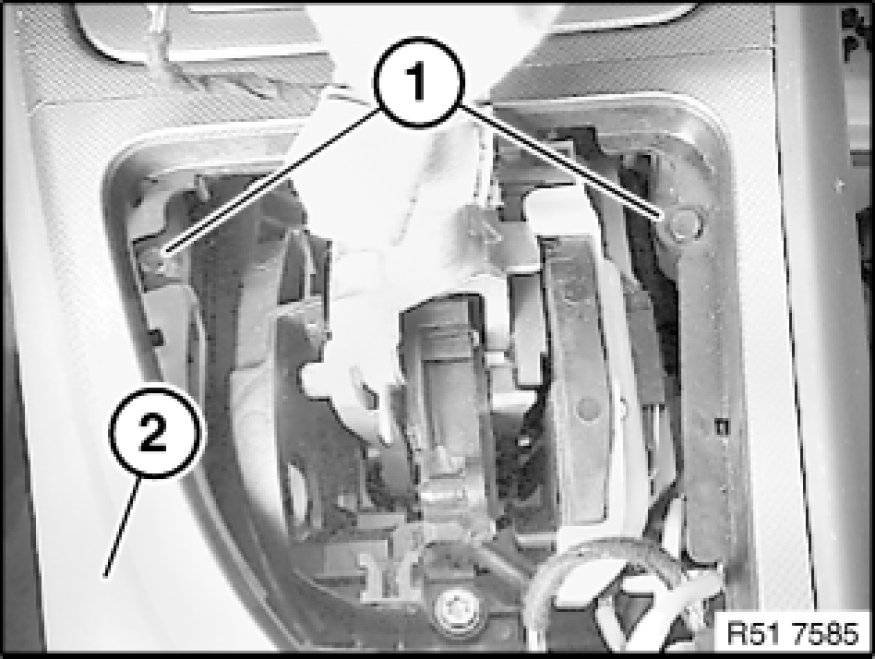
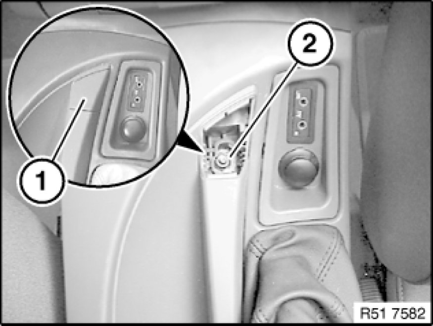
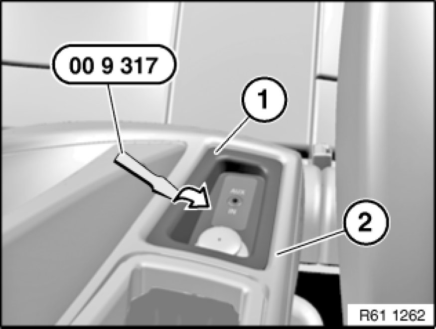
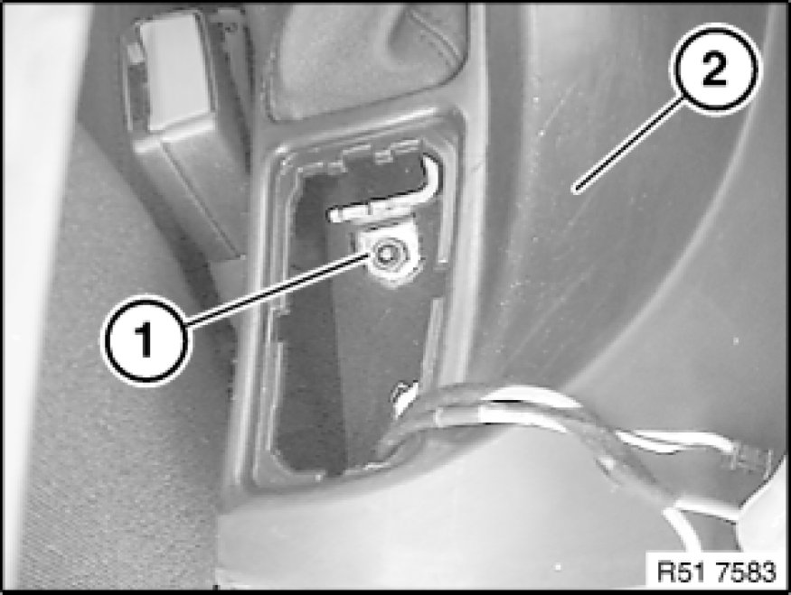
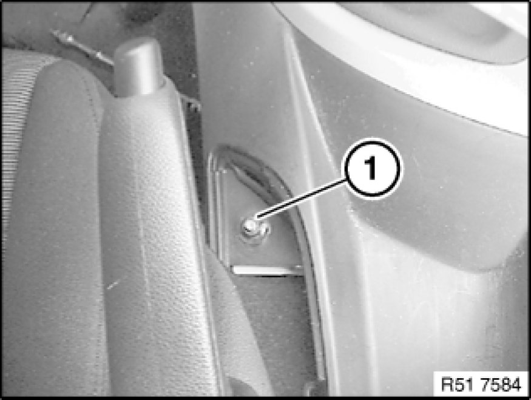
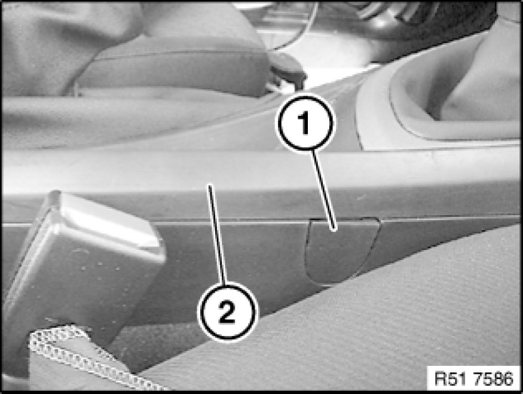
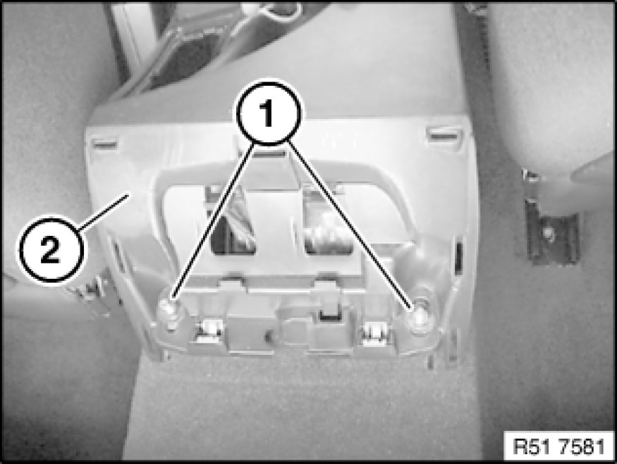
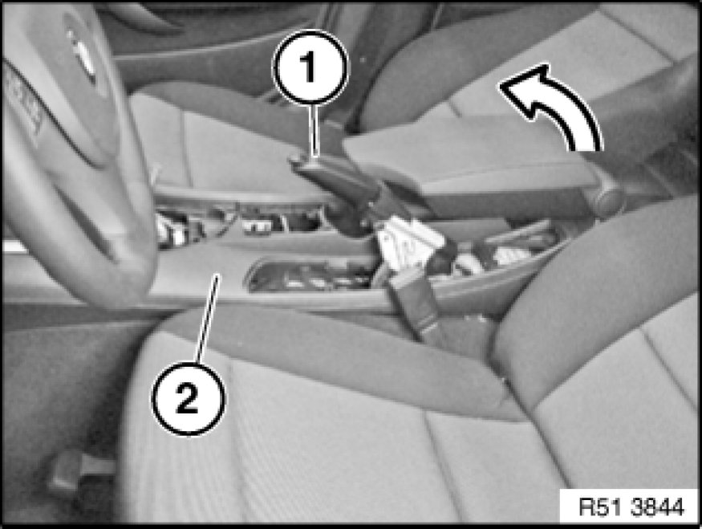

51 16 200 Removing and Installing Storage Compartment
51 16 200 - Removing and installing storage compartment

Special tools required:
- 00 9 317

Important!
Risk of damage!
When working on trim panel components, make sure that the sensitive surfaces are not scratched or damaged.

Necessary preliminary tasks:
- Move selector or gear lever towards rear
- Remove trim for gearshift 51 16 ... Removing and Installing/Replacing Trim For Gearshift
- Detach panel for pedal assembly 51 45 185 Removing and Installing/Replacing Panel For Pedals from storage compartment
- Detach instrument panel trim 51 45 181 Removing and Installing/Replacing Bottom Right Trim For Instrument Panel at bottom from storage compartment
- Remove trim on storage compartment at rear 51 16 ... Removing and Installing/Replacing Trim For Storage Compartment at Rear
- Remove gaiter for handbrake lever 34 41 ... Removing and Installing or Replacing Gaiter For Handbrake Lever
E87 up to build date 03/2007 only:
- Remove instrument panel trim

Release screws (1) on storage compartment (2) at front.

Version with centre armrest:
Lever out cover (1) and release nut (2) underneath.

Lever socket mounting (1) or trim with special tool 00 9 317 out of storage tray (2).
If necessary, disconnect associated plug connections and remove socket receptacle (1).

Version without centre armrest:
Release nut (1) on storage compartment (2).

Slacken nut (1).

Lever out cover (1) on storage compartment (2) at side and release screw underneath.

Release nuts (1) on storage compartment (2) at rear.

Tighten handbrake lever (1) as far as possible.
Raise storage compartment (2) at rear and feed out over handbrake lever (1) and gearshift or preselector lever in upwards direction.